List and Library Formatting
[!include[content-disclaimer](includes/content-disclaimer.md)]Gone are the days when SharePoint Lists and Libraries made for a dull and boring experience.
Today, we not only can choose from improved pre-configured formatting but also provided formats like the Board View. We can also tweak these existing layouts or go even further and apply custom formatting.
Historically there have been some formatting functionality that was released first to Lists before it was available in Libraries; but today, both share similar formatting support. One notable exception is the Board View, which is only available in Lists.
Another note for those wondering about how Microsoft Lists may fit into this conversation: as far as this conversation is concerned, it is not important whether your list is stored in SharePoint or whether it exists as a stand-alone resource - they both utilize the same underlying framework.
To introduce the concept of formatting, it is useful to begin first by defining the core concepts of Document Libraries and Lists. We will then discuss some of the reasons you may want to consider formatting. Finally, we'll review the high-level areas that support formatting today - Column Formatting, View Formatting, and Form Formatting.
Why Format a List or Library?
Formatting isn't just about style, though that certainly has its own merits! User experience research in web design has repeatedly shown that we should employ techniques to make information more easily scannable.
Carefully applying style can also help apply a visual hierarchy to our information, drawing our user's attention to the most important information and de-prioritizing any supporting information.
Other advantages of formatting include creating layouts that better suit the type of information being presented. For instance, imagine laying out Images, Tasks, and Documents in a single rigid fashion. Clearly there are ways to display Images (such as a Tile or Gallery layout) that could be tailored differently than Tasks (such as a Kanban layout).
By leveling up the formatting of our list and libraries we also incentivize new users with a more modern and appealing user experience, and thereby simplify our change management and adoption efforts.
Types of Formatting
There are a few different areas where we can apply custom formatting, and it is useful to split these out and understand how each has a role to play. In some cases, you may want to consider getting started in only one area before exploring the remaining options that introduce more complexity or have a broader impact.
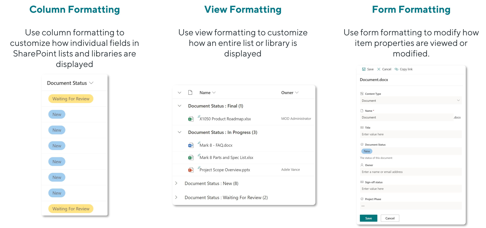
Column Formatting
Columns represent the 'Fields' in our Lists and Libraries - the vertical segments of information. A good equivalent concept is Column Headers in an Excel Spreadsheet, in which each Column contains a different type of information. One column may contain a list of Products, while another may contain the Prices for each product.
With Column Formatting, Lists and Libraries now have certain pre-configured 'suggested' formats that appear by default, depending on the type of column selected. For instance, when creating a choice column, we now get defaulted to a simple color-coded 'Choice Pills' format:
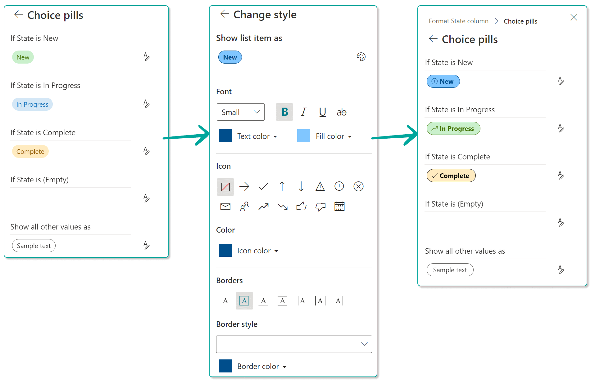
When column formatting is applied across several columns, it can transform the entire visual experience and make a list feel more modern and dynamic. There are opportunities to make information more meaningful across different types of columns, such as showing a User with both their Profile Photo and their Name, a Due Date that is formatted when it is overdue, and numerical columns that are transformed into image-based indicators. When combined, these effects make the list content more scannable and easier for users to consume. Compare the two versions below:
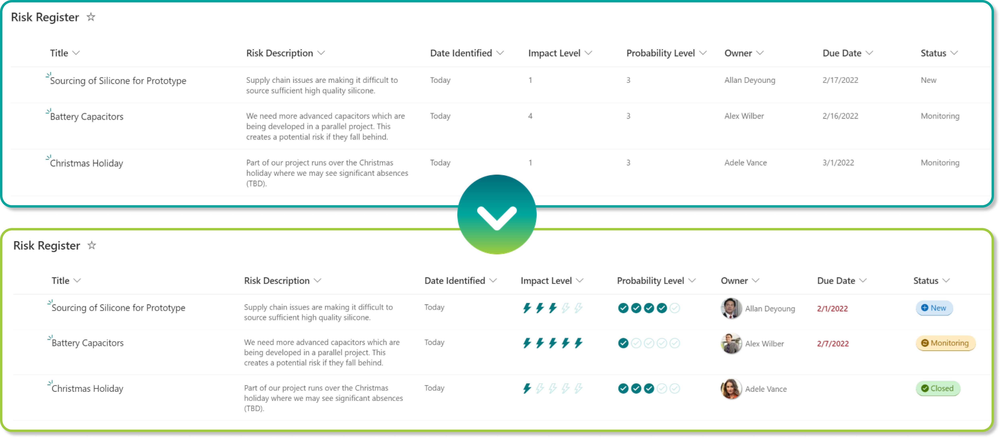
We can't attempt to cover all the possible ways to format a column, but another very useful example of column formatting is to embed actions in line with the list content itself. This can be tremendously useful for triggering things like Power Automate Workflows as the user experience to do this can otherwise be harder to locate. For instance, in the example below, we've created a Workflow that allows the Project Manager to elect to Promote an Active Risk into an Active Issue, by moving the content from one list to another and vice versa.
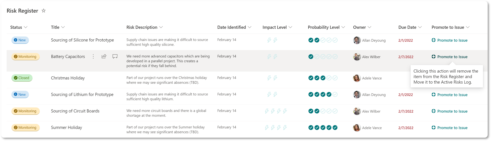
In another example, we've used formatting to allow metadata modification directly in line with the content itself. This saves users a step of moving into Quick Edit or opening the properties panel to modify the metadata. This is especially valuable in Lists or Libraries where certain values are frequently updated. In our Policy Library below, we have a Last Published Date that we want to update frequently and by using formatting the contributors can simply click a button to update the date.
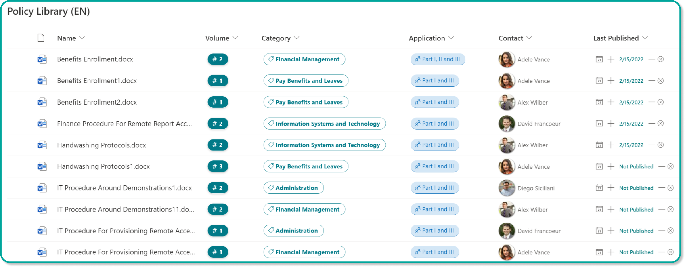
If you're looking for inspiration, a great place to look and even copy and paste code from community examples is the PnP Column Samples as well as the other resources below.
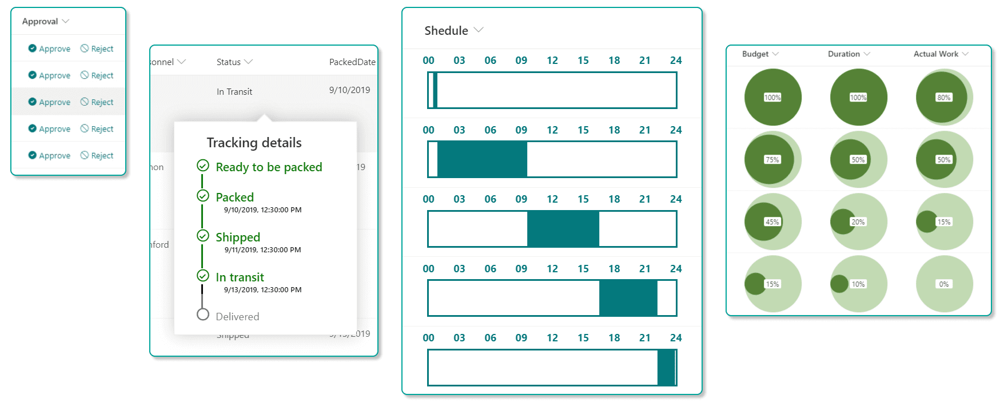
Column Formatting - Suggestions
- A good place to dabble in formatting is at the column level, as it is a localized change to a single column and can easily be reverted.
- Apply formatting but try to use consistent patterns for similar columns. Human brains rely on spatial memory to reduce cognitive burden and complete tasks more efficiently. For users to be able to develop spatial memory, they require stable UIs where things don't move around (much).
- Consider using Workflow Launch buttons to make it more obvious how to trigger automation.
- Use bars, charts, or iconography to simplify the consumption of numerical fields.
Column Formatting - Useful Resources
- Microsoft: Use column formatting to customize SharePoint
- PnP: List Formatting Getting Started
- Github: List Column Formatting Samples / List Column Formatting Samples by Column Type
- The Chris Kent: Master Formatting Wizard
- SharePoint Theme Generator: Generate a custom theme for SharePoint based on your primary color
- UI Fabric Icons: Icons you can use in your formatting
- SharePoint Online CSS Classes: Reference for all the SharePoint CSS classes that you may wish to use in your JSON
- HTML to JSON Formatter
View Formatting
While the ability to create custom Views within our Lists and Libraries is far from new, there are some interesting new options available for SharePoint content management. In contrast to Column Formatting where your styling will apply to a single column or field, View Formatting applies the stylistic change to the entire List or Library. When creating a New View from a List, you get several pre-built options to get you started.
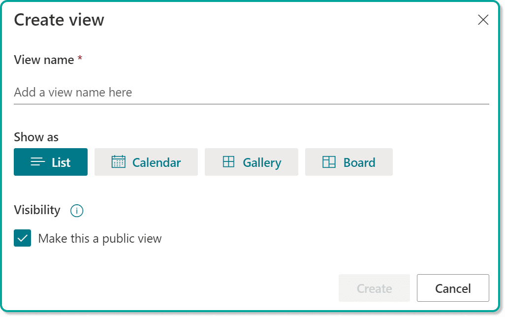
Libraries offer the same initial options, apart from the Board View, which you'll only find on Lists.
The Card Designer available when using the pre-set Gallery view can be very useful as it gives you an intuitive configuration experience to select what you want to show on your cards. If you've ever wanted to display your documents or list items as cards, now you can with no code!
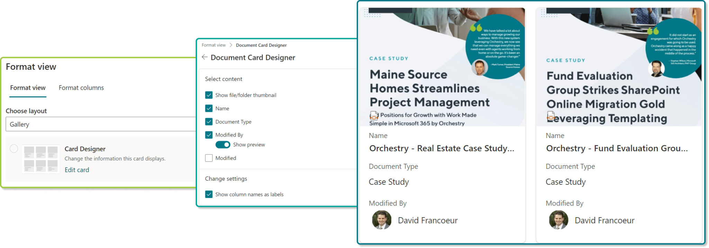
In another example, the View below can be achieved simply by tweaking the configuration to make a Library of Images much more interesting and informative.
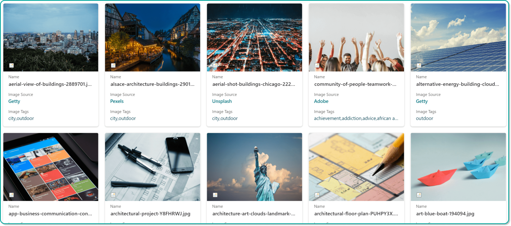
As mentioned earlier, Microsoft provides a Board view for Lists, which gives us a Kanban-like layout for organizing our list items, and even facilitates moving them between columns by dragging and dropping.
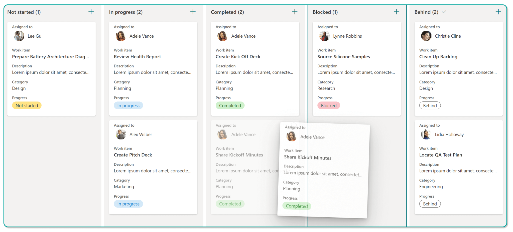
Much like Column Formatting, these formats can also be tweaked to your own needs, and there are quite a few use cases to consider, from accordions used to expand and collapse a list of FAQs, to tile-based buttons with iconography, to Gantt charts, to complex hover effects displaying additional metadata, and even timeline-based views. There's even a quite amazing sample by João Ferreira that closely replicates the user experience of To Do in a SharePoint List.
Another interesting scenario is to have the formatting utilize conditional logic to only show information based on values in other columns, or based on the current user viewing the information. Using this technique, we can easily create a personalized experience for end users.
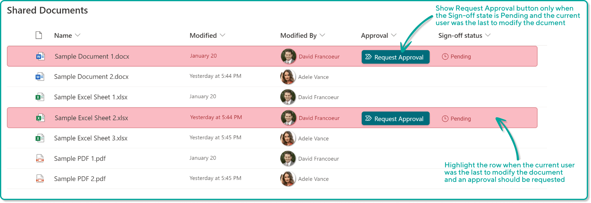
Many teams find the 'Grouping' functionality useful in Views, which introduces the ability to expand and collapse groups of information and avoids the use of Folders. Formatting can be applied to adjust the look and feel of the groupings, adding colors, iconography, and even removing the annoyingly repetitive column name label at the beginning of every grouping!
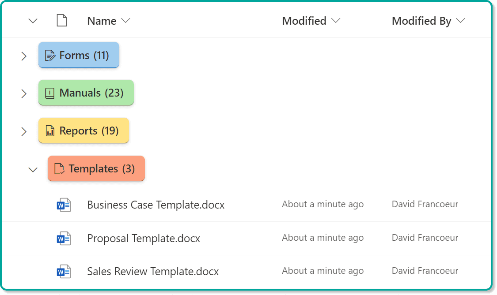
A more recent addition is the ability to use View Formatting to configure the List or Library Action Bar. This can be used to hide or show certain actions, move their order, change their text, tooltip, or associated icon, and define in what part of the bar the actions appear. One useful way to use this new function is to make it even simpler for users to create certain document type, and removing additional actions that are not frequently used.
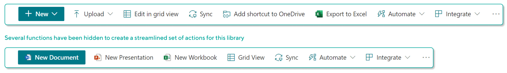
Critically, this function does not yet seem to allow for adding buttons to create Content Types.
View Formatting - Suggestions
- A good place to experiment with View formatting is with the new Card Designer.
- Consider creating views that are personalized using conditional logic.
- As before, experiment with different ways to visualize your information that makes it easier to consume for end users but try to use consistent patterns for similar lists and libraries.
- Use Command Bar formatting with caution as inconsistent action bars throughout several lists and libraries will cause confusion for end users.
View Formatting - Useful Resources
- Microsoft: Use view formatting to customize SharePoint
- Microsoft: Group Formatting
- Microsoft: Command Bar Formatting
- PnP: List Formatting Getting Started
- Github: List View Formatting Samples
Form Formatting
The SharePoint New and Edit Forms have been around from the early days of SharePoint and provides a form-based experience to populate new Items and edit properties for existing Items. While Grid View (previously Quick Edit and many years ago known as 'DataSheet View') provides a powerful means to edit your Document or List Item properties, the SharePoint Edit Form remains the primary and traditional means by which to view and edit metadata.
When un-customized, the form will display all the existing List or Library metadata. One of the simplest things to do is to hide or show a subset of columns. This ability is not new but useful to reduce the amount of 'noise' displayed to end users if not all fields require attention. To do this in the modern experience, open the Form panel, and click the 'modify' drop-down, followed by Edit Columns. From here, toggle the visibility of fields to on or off. Note: If Content Types are in play, the display can be modified within the Content Type configuration. In the example below, we've chosen to hide the Project Manager Notes field from all users, as well as a Promote to Issue field which is used to launch an attached workflow from the List View.
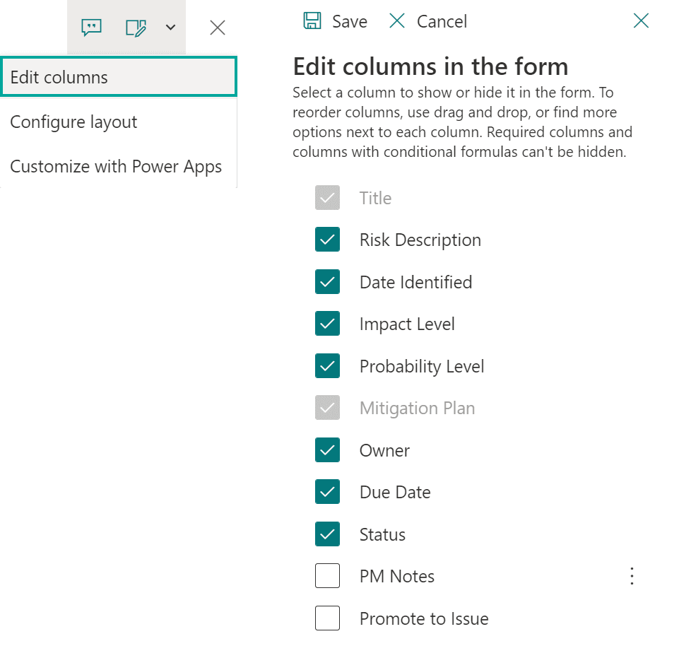
One interesting new option is the ability to apply conditional logic to determine whether fields are displayed. This opens possibilities beyond a global on or off, but only shows the field in certain situations, such as if the current user needs to see that field, or whether it should only be shown dependent on values in other fields. In the example below, we can now display the Project Manager Notes field, but only to the Project Manager. We can also only show a Mitigation Plan field if the Impact or Probability levels are three or greater.
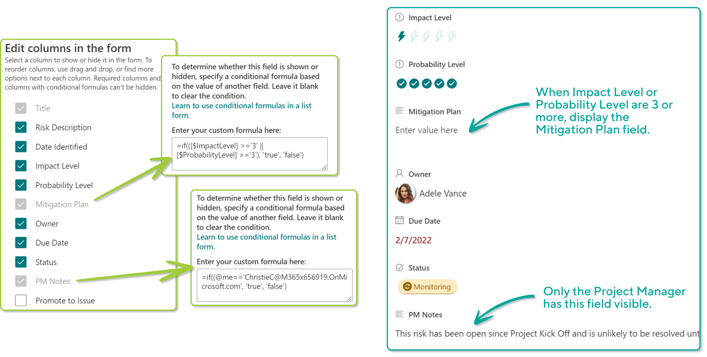
Once the unquestioned territory of PowerApps alone, we can now perform some configuration to modify the appearance of the form as well, including applying styling to the form Header, Footer, and Body. This gives us the ability to apply a more interesting Header to all items in the List or Library, as well as a potentially more tailored footer. In the body, we can also group related metadata into 'sections', which can add an enormous amount of context to the editing experience.
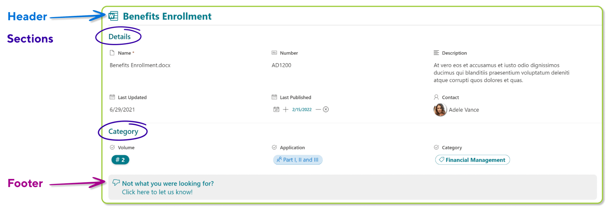
Form Formatting - Suggestions
- A good place to experiment with Form formatting is to consider fields that need not be displayed in the form in all scenarios and apply conditional logic to determine whether they are visible.
- Similarly, if you have cases where you are capturing a significant amount of metadata, consider putting the metadata into sections to streamline the population process for content authors.
Form Formatting - Useful Resources
Principal author: David Francoeur